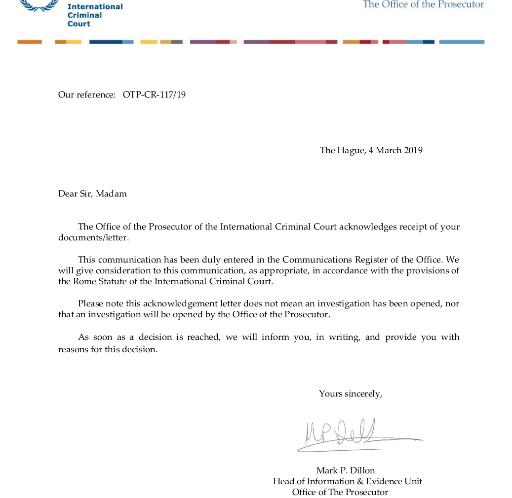
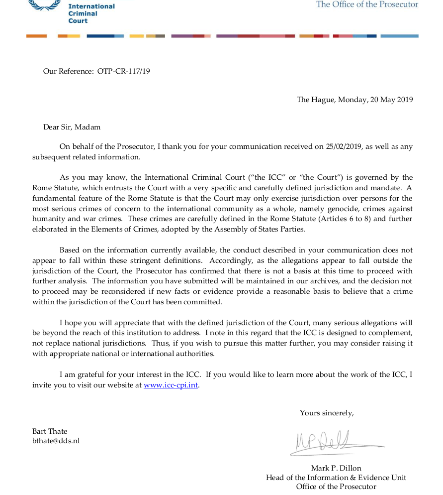
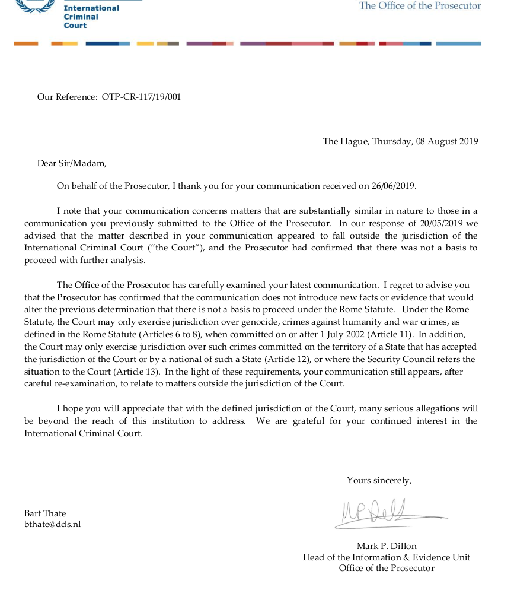

ACK

{kind=link}
EMAIL 1
Hello Office of the Prosecutor,
i write you in the context of communications and claims under art.15 of the Rome Statute. i want to inform the prosecutor that the king of the netherlands and his government are commiting 3 of the 5 crimes defined in the Rome Statute.
The dutch government has introduced three new forced care laws, the Wfz (wet forensische zorg) for criminals, the WvGGZ (Wet verplichte GGZ) for the disturbed and addicted and the Wzd (Wet zorg en dwang) for the handicapped.
Both the chamber suggesting these laws to the king and the king himself have been informed about the fact the the substances administered under these laws are proven to be poison.
There is proof the medication used in forced treatements in the netherlands are poison, see copies of the ECHA <European Chemical Agency> website for:
With the mass scale torture with poison the king of the netherlands and his chamber:
kills
does grave bodily and mental harm
makes impotent
on the following victim groups here in the Netherlands:
verslaafden (addicts)
bejaarden (elderly)
ggz patienten (psychiatric patients)
criminelen (criminials)
gehandicapten (handicapped)
Since the members of the chamber and the king were aware that these medicine are poison at the time they voted for this law and the day the Wfz law took effect (1-1-2019), i ask the prosecutor to prosecute the king for making the commiting of the above mentioned crimes (killing, torture and impotent making) possible.
OTP-CR-117/19

{kind=link}
EMAIL 2
Dear Mister Mark P. Dillon,
i received your writing to not to proceed with my request OTP-CR-117/19 on 20-05-2019.
i write you to ask you to reconsider now removed evidence has been restored online again.
In chronological order:
11-12-2017 I informed the chamber of the fact that the medicine used in treatements of psychiatric illnesses are poison. The proof exists of a url to the European Chemical Agency, showing that Haldol is a toxic substance (toxic if swallowed accompanied by a skull en bones). This link worked a the time the chamber member were informed.
23-01-2018 The Chamber votes in favour of the Wet Forensische Zorg, Wet verplichte GGZ, Wet Zorg en Dwang knowing that the medicine used in these treatements are poison.
05-10-2018 I inform the King of the fact that these medicine are poison
01-01-2019 The Wet Forensische Zorg is activated
10-01-2019 I inform local authorities of the informednes of both the chamber member and the king.
21-01-2019 I inform the Office of the Prosecutor with proof that these medicine are poison and proof of the informedness of the King and the chamber members.
23-01-2019 I withdraw the request to arrest king and chamber member from the local authorities. They didn’t react at all.
06-02-2019 The information on the ECHA website about Haldol being a poison is removed and a “nothing wrong with it” version is added
25-02-2019 After consideration i decided to formaly ask the king and chamber members to be prosecuted.
27-02-2019 I noticed that the site was updated and informed the Office of the Prosecutor about it.
20-05-2019 The Prosecutor informs me of his decision to not to proceed, mentioning the he could reconsider if new evidence arises.
25-06-2019 I talk to members of ECHA on twitter and got the link to the proof restored.
Knowing that the proof that Haldol is a poison was offline when you reached your conclusion to not to proceed, could you reconsider your conclusion now this proof is back online again ?
OTP-CR-117/19/001

{kind=link}
reconsider - evidence - guilty - writings